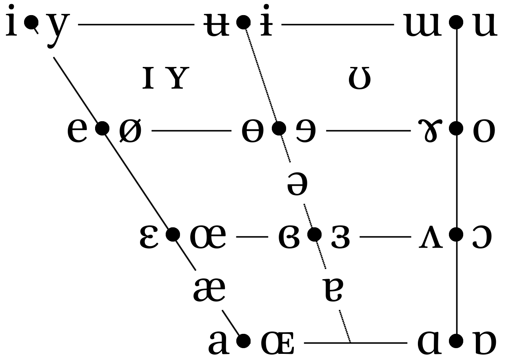
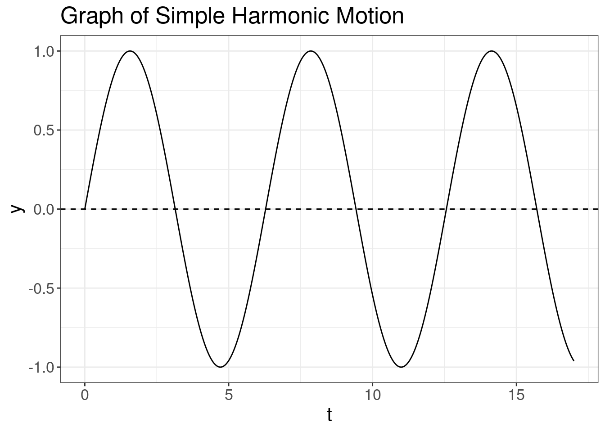

4 Vowels
4.1 Recap
- Sound waves can be described as
\[ s(t) = A \times \cos(2\pi ft + \phi) \]
A — amplitude;
f — is the fundamental frequency;
φ — phase;
t — time.
Speech sounds are complex waves
Fourier transform — allows to extract components of the complex wave

4.2 How shape of the vocal tract influences on vowels?
Historically, height and backness are impressionistic linguistic terms:

But we are intersted just in a cardinal points:

 If we analyze acoustics we can get something like this:
If we analyze acoustics we can get something like this:
| i | a | u | |
|---|---|---|---|
| F1 | 300 | 700 | 300 |
| F2 | 2300 | 1400 | 800 |
However, if we analyze real sounds it could be messy:

Tube model, after (Fant 1970): vocal tract is a tube or a set of tubes:

 \[c = \frac{\lambda}{T} = \lambda\times f \approx 33400\text{ cm/s}\]
* c — speed of sound;
* λ — wavelength;
* f — sound frequency;
* T — period.
\[c = \frac{\lambda}{T} = \lambda\times f \approx 33400\text{ cm/s}\]
* c — speed of sound;
* λ — wavelength;
* f — sound frequency;
* T — period.
Neutral vocal tract in the position for the vowel ə:

Resonance is a phenomenon in which a vibrating system or external force drives another system to oscillate with greater amplitude at specific frequencies. The lowest natural frequency at which such a tube resonates will have a wavelength (λ) four times the length of the tube (L).
\[c = \frac{\lambda}{T} = \lambda\times f \approx 33400\text{ cm/s}\]
The tube also resonates at odd multiples of that frequency.
\[F_1 = \frac{c}{\lambda} = \frac{c}{4 \times L} \approx 500 \text{ Hz}\] \[F_2 = \frac{c}{\lambda} = \frac{c}{\frac{4}{3} \times L} = \frac{3 \times c}{4 L} \approx 1500 \text{ Hz}\] \[F_3 = \frac{c}{\lambda} = \frac{c}{\frac{4}{5} \times L} = \frac{5 \times c}{4 L} \approx 2500 \text{ Hz}\] \[F_n = \frac{c}{\lambda} = \frac{c}{\frac{4}{n} \times L} = \frac{n \times c}{4 L} \approx n \times 500 \text{ Hz}\]
Something like this we can expect from animals: